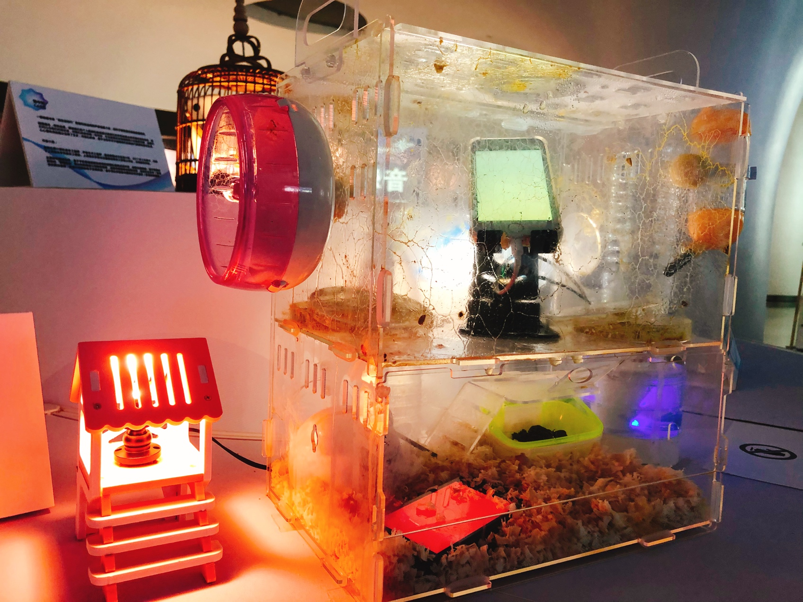
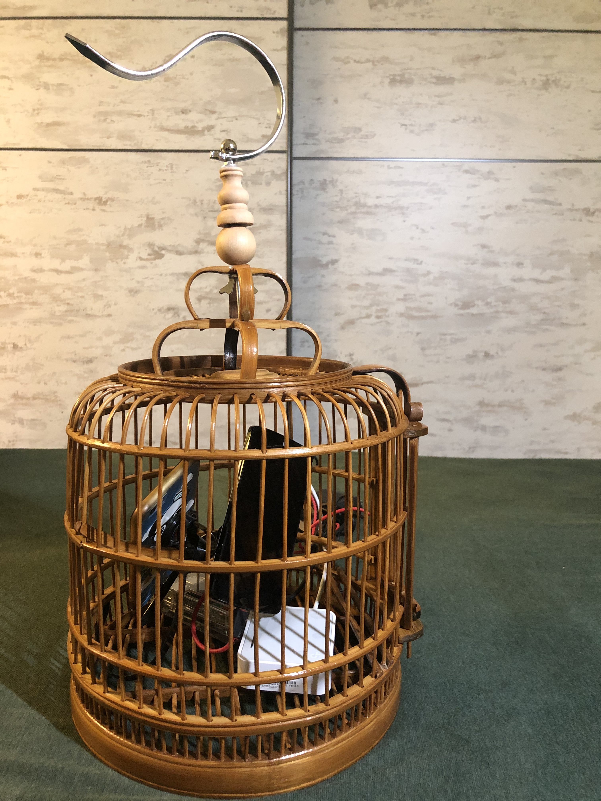
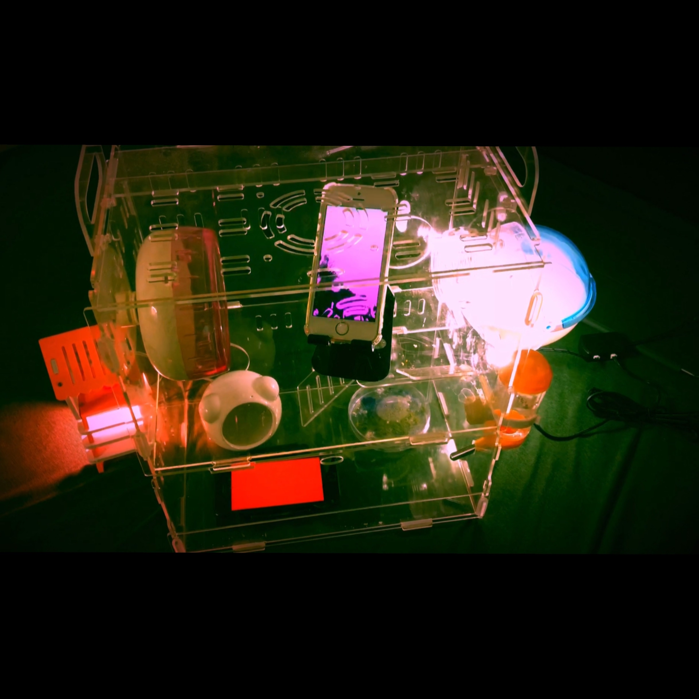
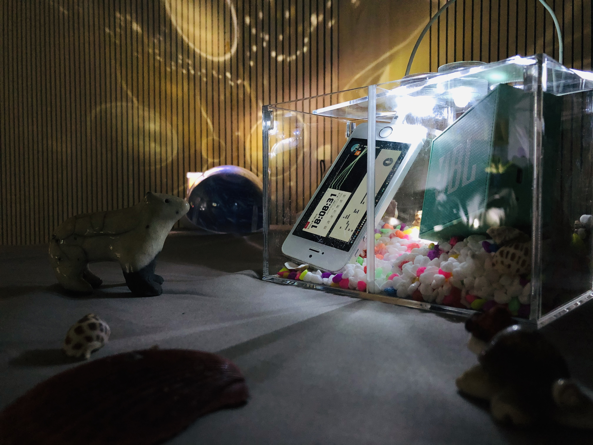

2011.10 Shanghai, China
Co-production between Grame and SHCM/EMW
Line 9, musique, danse et vidéo
Chen Qiangbin, musique
Jin Xing, danseuse, chorégraphe
Li Zhenni, harpe
Christophe Lebreton, scénographie et technologie/Grame
Weng Ruolun, assistant tecnique
2011.10 中国 上海
上海国际电子音乐周，GRAME，上海金星现代舞团联合委约
Line 9, 为竖琴，舞者，视频和交互式电子音乐而作
作曲：陈强斌
编舞，舞者：金星
竖琴：李珍妮
工程师：Christophe Lebreton（Grame）
技术助理：翁若伦
2012.7-2012.9 Lyon, France
Residence in GRAME, work for the presentation "INScore-Line9".
EXPERIMENTA is a technical fesival where GRAME presente their production and research. "INScore-Line9" is a demo which illustrate how musical
argumented score inplemented in electronic performance.
2012.7-2012.9 法国 里昂
法国国家音乐创作中心Grame驻留项目
其中基于作品《Line9》的交互式板块展示于“EXPERIMENTA”展览会
2013.10 Shanghai, China
Phantom SanLiu for string quartet and live electronics
Composer：Chen Qiangbin
Electronics: Weng Ruolun
Violin I: Huang Minlin (@ELA)
Violin II: Tian Junjun(@ELA)
Viola: Yu Haifeng (@ELA)
Cello:
Xie Zhiying(@ELA)
2013.10 中国 上海
幻影三六 - 为弦乐四重奏与电子音乐而作
作曲：陈强斌
电子音乐工程：翁若伦
小提琴I：黄晏琳(@ELA)
小提琴II：田俊俊(@ELA)
中提琴：俞海锋(@ELA)
大提琴：谢芝莹(@ELA)

 ×
×
2014.11 Nice, France
Nice-Shanghai New Sound
Since 2012, during master course of Francois Paris in Shanghai Conservatory of Music, I worked as a technical assistant and RIM. I realized three concerts in this project and independently
he completed more than 20 pieces of interactive music patches.In 2014, we presented a concert in festival Manca.
2014.11 中国 上海
尼斯－上海 新声音
CIRM总监Francois先生大师课中，指导近二十首年轻作曲家的原创电子音乐作品，并于2014年尼斯MANCA音乐节专场音乐会中呈现。
2015.10 Shanghai, China
Dialog 2.0 for Live Soundscape and Electronic Music
Composer & Creational Design: LI Lei, XIE Jun
Program Design: WENG Ruolun, XU Dixiao
Visual Design: BAO Weiyue
Pingtan Performance: LU Jiawei
Dancer: ZHAO Yuanhang
Double bass: HOU Xiaoyun
2015.10 中国 上海
对话2.0——现场声景与电子音乐》
作品创意设计/音乐创作：李磊（@ViTA）谢浚（@ViTA）
声音工程设计：翁若伦（@ViTA）徐笛潇（@ViTA）
视觉设计：包为跃
评弹表演：陆嘉玮
舞者：赵远航
低音提琴：侯晓云
 ×
×
2015.10 Shanghai, China
Co-commissioned by Shanghai Conservatory of Music & GRAME
Group Behavious: SMART | Excited Peaceful
Conception/Composer/Production : Qin Yi
Mobile application programme: Weng Ruolun
Technical support: Christophe Lebreton
Percussion: Song Yuchen
Performance:
Zoe, Michael, J.C, Cherry
Application icon design: Huang Ruozhou
2015.10 中国 上海
上海音乐学院国际电子音乐周、法国国家创作中心联合委约
智 | 动静
创意/设计/制作：秦 毅
手机应用程序设计：翁若伦
技术支持：Christophe Lebreton
打击乐：宋雨晨
形体引导：Zoe、Michael、J.C、Cherry
手机应用icon设计：黄若洲
2015.08 Shanghai, China
Esonic3
Perfomance 3D,created by Shanghai Conservatory of Music
This is a performance in museum,with 130 loudspeakers.We developed platform for composer and actors in that "musical theater".
2015.08 中国 上海
声立方——超感官空间
2015年夏天的魔都上海，一个引领全球最新理念、融合艺术与科技的创新项目横空出现，它就是：“声立方·超感官空间——从听觉出发的非典型跨媒介艺术展演”！
2017.03 St-Etienne, France
Pivone---PARTICIPATORY PERFORMANCE FOR PIPA, ELECTRONIC MUSIC AND SMARTPHONES OF PUBLIC.
Conception&Application: WENG Ruolun
Composition: LIU Jia & Michele SAMAROTTO
Pipa: LIU Jia
2017.10 Shanghai,
China
Shanghai International Festival of Arts - RAW
Pipa: LIU Shuya
Kunqu: Huang Zhuyu
2017.03 法国 圣埃蒂安
牡丹——为琵琶、昆曲小生、手机而作的沉浸式电子音乐剧场
概念、导演、程序设计：翁若伦
作曲、电子音乐设计: 刘佳、Michele SAMAROTTO
琵琶: 刘佳
2017.10 中国 上海
上海国际艺术节-扶持青年艺术家邀约计划展演
琵琶: 刘曙娅
昆曲小生: 黄朱雨
友情提示：视频需要使用VPN
2017.03 Lyon, France
Co-production between Grame and Maison des Aveugles de Lyon
AudioGuide
Conception&Application: Christophe Lebreton, WENG Ruolun
An application designed by Christophe Lebreton and me for blind person to experience a special sound map in the project created by GRAME
and La Maison des Aveugles à Lyon. Based on the sound processing generated by faust2smartphone, we combine another framework in iOS, CoreLocation/CLBeacon for the Beacon part, which allows Bluetooth devices to broadcast or receive tiny
and static pieces of data within short distances.
2017.07 法国 里昂
里昂盲人院与法国国家音乐创作中心GRAME联合创作
AudioGuide
概念、程序设计：Christophe Lebreton, 翁若伦
由耳机连接手机特别为盲人体验设计的声音装置。配合遍布在园中各地的传感器，漫步声景地图中，在音乐的世界中聆听不同的故事讲述，体会人生百态。
2017.10 Shanghai, Chian
International Computer Music Conference
3D Sound Creation Plarform based on Ambisonics
Best Chinese Paper Award
2017.10 中国 上海
第43届国际计算机音乐大会
基于Ambisonics算法的3D声音创作平台
最佳中文论奖
2018.03 New York, US
Pan Asia Sound Festival
The Shanghai You Dont Know
'Ban 2.0'
'Line 9'
'Phanthom 36'
'Dialog 2.0'
2018.03 美国 纽约
泛亚声音艺术节
来自上海的新声音
'斑 2.0'
'Line 9'
'幻影三六'
'对话 2.0'
2018.07 Mainz, Germany
1st International FAUST Conference
Paper "faust2smartphone--- A generator for musical mobile applications"
2018.07 德国 美因茨
第一届国际FAUST音频语言大会
论文《faust2smartphone--- A generator for musical mobile applications》
2018.08 Daegu, Korea
International Computer Music Conference
Pivoine
2018.08 韩国 大邱
第44届国际计算机音乐大会
牡丹
2018.08 Los Angels, US
the BOARD - Summer Happiness Festival
Ban 2.0
2018.08 美国 洛杉矶
BOARD美术馆夏季音乐节
斑 2.0
2018-2024 Shanghai, China / France etc
Cooperation with GRAME and LisiLog
Light Wall System / Le Corps Instrument
'Jouer des sons dans la lumière comme l’on pourrait peindre sur une toile avec ses mains…'
Playing sounds in the light as one could paint on a canvas with his hands
...
2018 中国 上海 / 法国等地
与GRAME/LisiLog联合制作
Light Wall System 光之墙
在光线中，肢体就是画笔
2018-2024 Shanghai, China / France etc
Cooperation with LisiLog
Virtual Rhizome / Smart Hand Computer
Premiere in 2018 Biennale of Music in Lyon, played by Jean Geoffroy, created by Vincent-Raphaël Carinola and Christophe Lebreton.
A solo performer armed by two smartphones,
is diving into a virtual sound architecture that he must dispense and that changes every moment.
2018 中国 上海 / 法国等地
与LisiLog联合制作
Virtual Rhizome 智能手机乐器
为手机特别设计的智能乐器系统，表演者通过手势等传感形成丰富的表演维度。
友情提示：视频需要使用VPN
× 2019.01 London, UK
Sound State Festival
The Shanghai You Dont Know
'Ban 2.0'
'Encounter'
'Dialog 2.0'
2019.01 英国 伦敦
Sound State声音艺术节
来自上海的新声音
'斑 2.0'
'Encounter'
'对话 2.0'
2019.05 Shanghai, China
Shanghai Festival of Technology
Cooperation with Shanghai New York University and Tongji University
AI - MUSIC
Demo of an instrument ZHENG playing with AI and interacrive video.
2019.05 中国 上海
上海科技节
AI乐之城
同济声音实验室携手上海音乐学院音乐工程系、上海纽约大学交互媒体艺术系以及上海视觉艺术学院流行音乐学院的老师同学们联合推出了一个关于新媒体乐器、互动视觉与AI对话的分享活动——《AI乐之城》。
2019 Shanghai, China
Moisture Migration
“Moisture migration” focuses on the relationship between vitality and survival in the context of "moistmedia ".
"Moistmedia " proposed by Roy Ascott unveils a huge discourse background generated by the combination of "dry " silicon media of computer system and "wet
" biological media of life system. The boundaries between creatures and machines, natural objects and artificial creations are becoming increasingly blurred. From the presentation of biological materiality to the focus on behavioral consciousness of life system, "moist media " is accelerating the arrival of the “post-biological era”.
Rambling in it, we are transformed into everything, sensing the vitality on the edge of spirit and material, virtual and reality. Energy is absorbed and released by different media, and the molecules evolve and migrate between different orbits. That is an adjustment, organization and control from within the biological system. The moisture boundary is weakened, and the biodiversity of a “moist” future modulated by the dry/wet ratio is thriving.
2019 中国 上海
湿度跃迁
「湿度跃迁」聚焦“湿媒体”语境下，生命力与生存关系的探寻。
阿斯科特(Roy Ascott)提出的“湿媒体(Moistmedia)”，抛出了由计算机系统“干性(Dry)”硅晶媒 介与生命系统“湿性(Wet)”生物介质相结合所生发的巨大话语背景。生物与机器、自然物与人造物之间的界限 变得越来越模糊，从生物的物质性演绎到生命系统行为意识的关注，“湿媒体”正加速“后生物时代”的到来。
漫步穿梭于其中，我们化身万物，感知对话着游移在精神与物质，虚拟与现实边缘的生命力。它在光影交织中不断吸收释放，在草长莺飞间进化跃迁，那是来自生物系统内部的一种调整、组织和控制。传统概念上的湿度边界被弱化，介由干湿比例的调和，“湿性”未来生命体的多样性正在迸发。
2020-2023 Shanghai, China
CAGE
This series is created during the pandemic of COVID-19, which is aimed to explore the imagination of the “post-biological era”.
The work consists three themes: “Radio” in a bird cage; “Gestation” in a hamster cage and “Castaway” in a fish tank.
The smartphones in the cages will play the role of “pet” with not just new technologies, but also our personal data, memories and the communication trace of internet. They will either “dialog” with you, either present you in a virtual online meeting, or show you how they fuse with the biological intelligence. It is sometimes kind of “caricature”, golden mean but indifferent, that’s because more than enough to cope with you, they prefer to be alone and updating themselves. Cage for them is maybe a temporarily isolation and just a self comfort for you.
2020 中国 上海
“笼中对” 系列
200mm*200mm*500mm
鸟笼、手机、树莓派、无线网关
400mm*200mm*500mm
仓鼠笼、手机、黏菌
180mm*120mm*50mm
斗鱼缸、生态杯、手机
一部畅想未来“后生物时代”智能科技运用的声音艺术融合生物艺术装置系列小品，创作于新型冠状病毒疫情期间。
目前由“电波”、“母体”和“漂流”主题组成。
提笼遛鸟，悠然自得。拥有我们的个人数据和音视频记录回忆的手机扮演未来所谓的宠物角色，我们可以与他们对话交流，对我们来说仿佛一切可控，社交距离并没有阻碍媒介讯息的沟通，自我内心心理秩序的建立也有了支点；对他们来说，笼子也似乎并不阻碍他们自我迭代更新和意识生成。
“母体”，生物孕育的温床，也是“安全感”的代名词。充满“群体智能”的黏菌在湿度宜人的环境下不断呈网状扩张生长，叠加两部手机时不时的受外界声响刺激发出的啼哭和咿呀学语扮演起了未来智慧进化尝试融合“生物智能”的想象，抛出了这样一个“湿性未来”的话语背景。
“星辰大海”，广袤深邃。幼时，你可曾在海边捡拾花贝壳和听海螺？可曾寄出属于你自己的“漂流瓶”？后疫情时代，大家相忘于江湖，我们化身手机上“在线会议”里的头像，声音经过捕捉传输和远程电脑的实时处理再返回输出，延时叠加啸叫的信息流满是网络通讯时空的痕迹。




 ×
×
2020-2023 中国 上海
Smart Motion System
- SMS -
Smart Motion System，简称SMS，旨在搭建一个基于智能手机的运动手势控制为主的“新乐器”平台。
此平台强调：
* 跳脱出常规“控制器＋电脑处理”思路，运用手机集成特点，形成控制、处理、发声一体化模式；
* 淡化“操作界面化”，“乐器键盘化”，强调演奏者的手势动作控制，在练习与演出中积极调动其听感主导思维，不受过多界面条件约束；
* 模块化程序架构，声音设计素材替换方便，可复制可推广；声音设计不追求“模拟复刻”现有乐器演奏。
2020 中国 上海
非人类 机器 物
新媒体艺术家 邓悦君 主讲
在梦里，我们化身成万物，直面自己的本源。我们扮演成他者与自我对话，来满足每一个贪婪的欲望。但梦不仅存在于梦，它们比现实更真实。这些不存在的类昆虫生命体有如梦里的化身，以独特的方式存在着，帮助我去探索这个世界的原始状态。
2020 中国 上海
舞台 = 乐器
声音艺术工程师 Christophe Lebreton 主讲
纵览包括《Light Music》、《Threads》等多部代表性作品，探讨新媒体交互式电子音乐剧场中，如何运用各种交互式手段，搭建”增强现实“音乐剧场，使得整个舞台如乐器一般，成为创作主体。